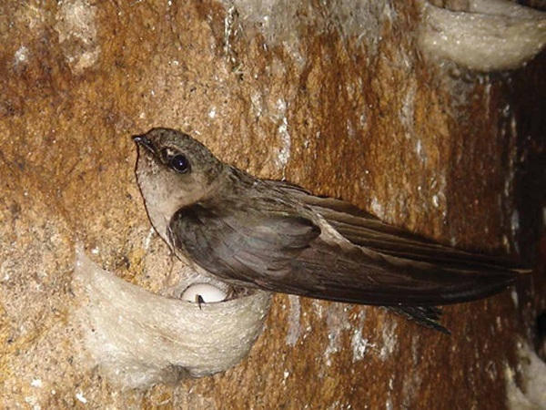
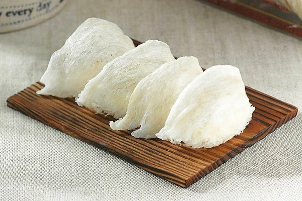
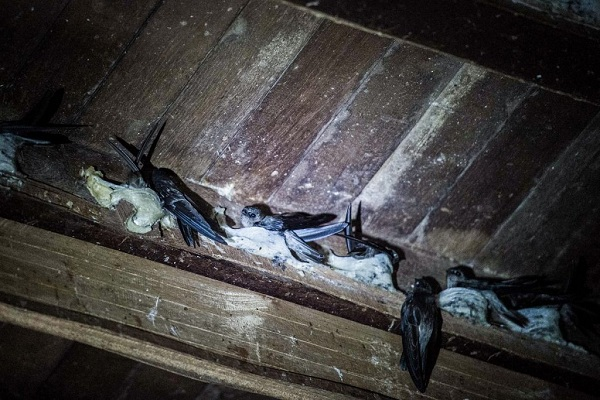
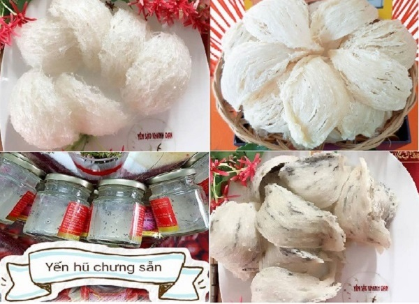

Yến sào Cần Giờ có tốt không?
Hiện nay có khá nhiều người đã và đang nhận được lời khuyên là nên tìm mua yến sào Cần Giờ để bồi bổ, tăng cường sức khỏe cho bản thân cũng như cả gia đình. Tuy nhiên vốn là một sản phẩm khá lạ lẫm, nhiều người vẫn thường băn khoăn không biết yến sào Cần Giờ có tốt không?
Yến sào Cần Giờ có tốt hay không?
Hẳn các bạn đã biết, yến sào hay tổ yến sào thực chất là tổ của loài chim yến tạo thành từ chính nước bọt của chúng và do đó có thể ăn được. Rất nhiều dưỡng chất còn sót lại sau khi yến ăn sẽ tích tụ vào nước bọt, từ đó làm cho tổ yến chứa rất nhiều chất dinh dưỡng, đem lại những lợi ích tuyệt vời cho sức khỏe. Cụ thể, sản phẩm yến sào Cần Giờ có những công dụng sau đây:
- Giúp chữa suy nhược, phục hồi sức khỏe.
- Cải thiện thể chất, tăng cường hệ miễn dịch, phòng chống hiệu quả các bệnh do ô nhiễm không khí.
- An thần, tĩnh tâm, chống stress
- Và nhiều tác dụng tuyệt vời khác
Như vậy, chúng tôi xin được trả lời câu hỏi yến sào Cần Giờ có tốt hay không mà nhiều người thường đặt ra là: Yến sào Cần Giờ đem lại rất nhiều tác dụng tuyệt vời cho sức khỏe con người. Các bạn có thể sử dụng sản phẩm thường xuyên và đều đặn để cải thiện, tăng cường sức khỏe, sống lâu và luôn đảm bảo giữ được sự minh mẫn.
Ưu điểm sản phẩm yến sào Cần Giờ do shop Khánh Đan cung cấp
Có giá bán rẻ: Tổ yến thiên nhiên ở ngoài thị trường thường có giá thành rất đắt đỏ, dao động trong khoảng từ 7 - 10 triệu VNĐ/100 gram. Giá bán của chúng tăng lên cao như vậy là bởi chim yến thường làm tổ trên những vách đá, trần hang động cao, cheo leo. Điều này khiến cho việc khai thác tổ yến rất khó khăn, nguy hiểm. Trong khi đó, yến sào Cần Giờ lại được khai thác ở các nhà nuôi yến - những công trình nhân tạo do con người thiết kế, xây dựng. Vì vậy mà công việc thu hoạch trở nên đơn giản, an toàn đồng thời giá thành sản phẩm sẽ rẻ hơn rất nhiều, chỉ dao động trong khoảng từ 3.200.000 - 4.400.000 VNĐ/100 gram, bằng một nửa so với tổ yến thiên nhiên (7 - 10 triệu VNĐ/100 gram) trong khi chất lượng và hương vị thì vẫn tương đương.
Đảm bảo về nguồn gốc, xuất xứ: Huyện Cần Giờ từ lâu đã là một trong những khu vực chuyên khai thác, chế biến, cung cấp tổ yến với chất lượng và quy mô lớn nhất trên cả nước. Ngày nay, nơi đây vẫn là một trong những cái tên đại diện cho dòng sản phẩm nguyên chất, đảm bảo uy tín với giá thành hợp lý. Vì vậy khi lựa chọn mua và sử dụng sản phẩm yến sào Cần Giờ, các bạn hoàn toàn có thể yên tâm về nguồn gốc, xuất xứ của sản phẩm, không lo mua phải hàng giả, hàng nhái, hàng kém chất lượng
Đảm bảo về chất lượng: Cửa hàng chúng tôi luôn sẵn sàng đưa bất cứ ai có nhu cầu đi tham quan, tìm hiểu về quá trình khai thác, thu hoạch và chế biến tổ yến. Vì vậy, các bạn không cần phải lo lắng về việc các loại phụ gia, chất độn, hóa chất độc hại có thể được thêm vào sản phẩm trước, trong và sau khi sơ chế, chế biến.
Đa dạng về chủng loại sản phẩm: Nắm bắt được phần nào nhu cầu đa dạng của người tiêu dùng, cửa hàng Khánh Đan triển khai cung cấp nhiều loại sản phẩm khác nhau. Cụ thể như: tổ yến thô nguyên chất, yến sào làm sạch ép khuôn, yến sào rút lông nguyên tổ, tổ yến chế biến sẵn,…. Do đó các bạn sẽ dễ dàng tìm thấy sản phẩm phù hợp nhất với sở thích và điều kiện của bản thân.